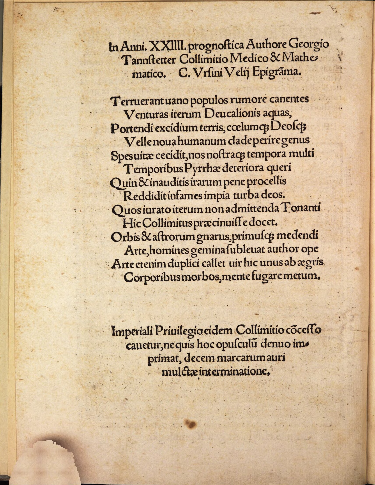

Tannsteter Collimitius 7 (Kaspar Ursinus Vel)
Faksimile

Transkription
In Anni XXIIII. prognostica Authore Georgio Tannstetter Collimitio Medico et Mathematico. Caspar Ursini Velii Epigramma.
Terruerant vario populos rumore canentes
Venturas iterum Deucalionis aquas,
Portendi excidium terris, caelumque Deosque
Velle nova humanum clade perire genus
Spes vitae cecidit, nos nostraque tempora multi
Temporibus Pyrrhae deteriora queri
Quin et inauditis irarum paene procellis
Reddidit infames impia turba deos.
Quos iurato iterum non admittenda Tonanti
Hic Collimitus praecinuisse docet.
Orbis et astrorum gnarus, primusque medendi
Arte, homines gemina sublevat author ope
Arte etenim duplici callet vir hic unus ab aegris
Corporibus morbos, mente fugare metum.
Übersetzung
Ein Epigramm des Ursinus Vel auf die Wetterzeichen des Jahres 24 des Autors Georg Tannstetter Collimitius, des Arztes und Mathematikers.
Durch verschiedenes Gerede hatten jene die Völker verängstigt, die sangen, dass die Fluten des Deukalion wiederum kommen würden, dass der Erde der Untergang vorhergesagt werde und dass der Himmel und die Götter wollen, dass das Menschengeschlecht an einem neuen Unglück zugrunde gehe. Die Hoffung auf das Leben schwand und viele von uns beklagten, dass unsere Zeiten schlechter als die Zeiten der Pyrrha sind, ja die ruchlose Menge berichtete sogar, die Götter seien wegen einem beinahe ungehörten Aufruhr ihrer Wut verrufen. Dieser Tannstetter lehrt, dass diese prophezeiht haben, dass der Donnerer <dies> unter Eid nicht wieder erlauben dürfe. Kundig des Himmels und der Sterne und der bedeutendste in der Heilkunst, lindert der Autor <den Zustand> der Menschen durch doppelte Hilfeleistung. Denn mit zweifacher Kraft versteht es dieser eine Mann, aus kranken Körpern die Krankheiten, aus dem Geist die Furcht zu vertreiben.